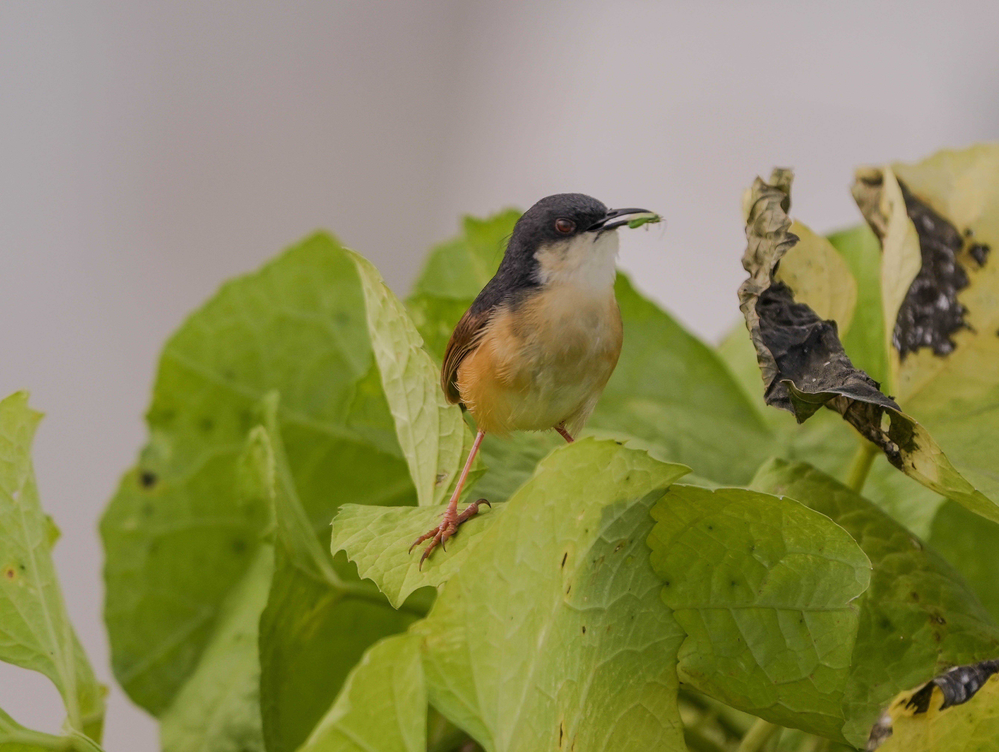

The Grey-Breasted Prinia is a small, active warbler-like bird that inhabits grasslands, scrub, open woodland, and cultivated areas. It has a greyish breast, brown upperparts, and a long, narrow tail that is frequently cocked or moved as it searches for food. It usually stays close to vegetation and feeds on insects and other tiny invertebrates. Its greyish breast and relatively subdued plumage help distinguish it from the more strongly marked Ashy Prinia and the browner Plain Prinia.